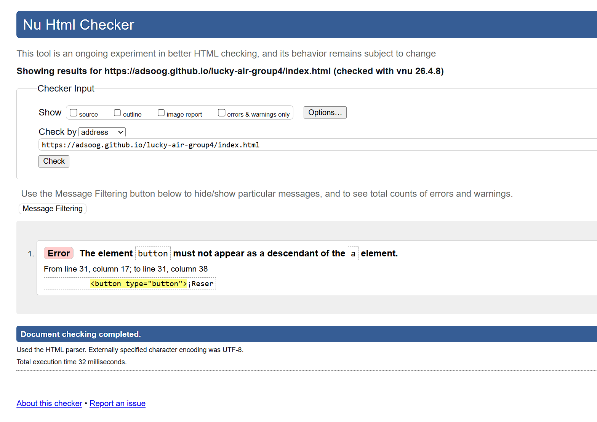
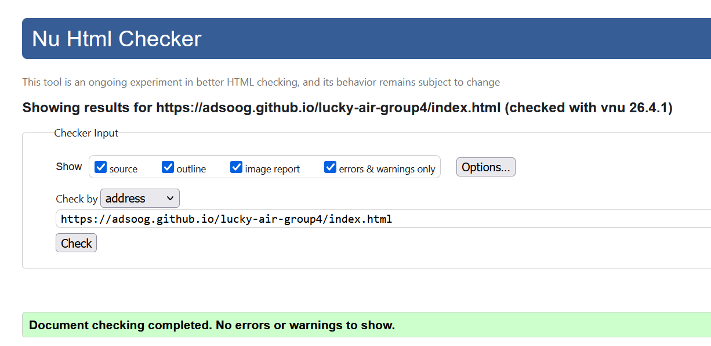

Fase 1: Reporte de Errores Inicial
Identificación de errores de anidación y atributos obsoletos.

Este proyecto consistió en la maquetación frontend de un prototipo web para la aerolínea "Lucky Air", utilizando estrictamente HTML5 puro sin la intervención de hojas de estilo (CSS) ni scripts (JavaScript). El objetivo principal fue maximizar el potencial de la semántica web, asegurando una estructura lógica, accesible y completamente validada bajo los estándares de la W3C (Nu Html Checker).
Se implementaron clases descriptivas en todas las etiquetas como preparación directa para una futura integración de CSS, demostrando buenas prácticas de arquitectura frontend.
A continuación se presentan las capturas del proceso de validación utilizando el Nu Html Checker, evidenciando la corrección de errores estructurales (como la anidación incorrecta de elementos interactivos) hasta lograr una validación perfecta.
Identificación de errores de anidación y atributos obsoletos.

Código estructurado correctamente y libre de errores tras aplicar las correcciones semánticas.
